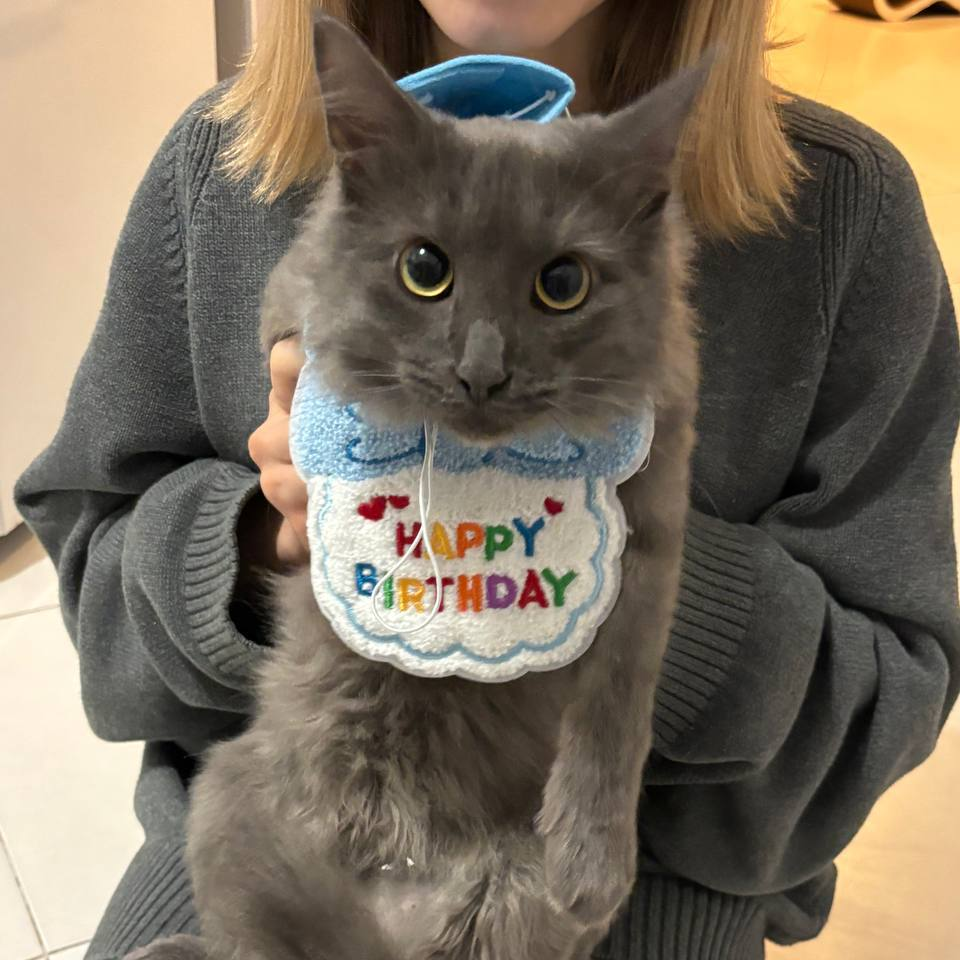
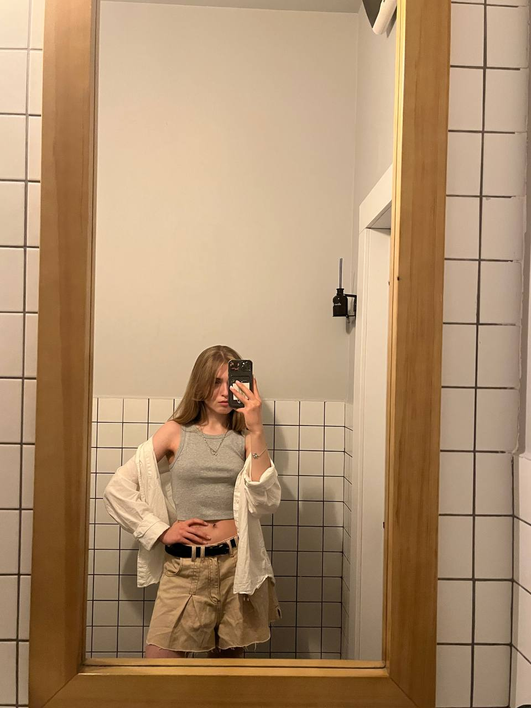

Кот Джимулик
Он очень смешной
23КНТ-3
Меня зовут Нина, мне 20, я из Нижнего Новгорода
Интерстеллар, Человек дождя, Начало, 500 дней лета, Как я встретил вашу маму, Сплетница
Тревожные люди — Фредерик Бакман, Ночные дороги — Гайто Газданов
Sudden Lights, She Wants Revenge, The Smiths, Linkin Park, The Drums
Я мечтаю съездить в Нидерланды, Францию, Испанию, Данию, Норвегию, Португалию и ещё много-много куда
Мечтаю научиться кататься на сноуборде. Мечтаю поехать на Камчатку учиться серфить, мечтаю научиться играть в большой теннис. Мечтаю об путешествии на автодоме по США. Мечтаю работать в Booking.com. Мечтаю о мире..
Он очень смешной
Дойча — собачка моих родителей, она милашка